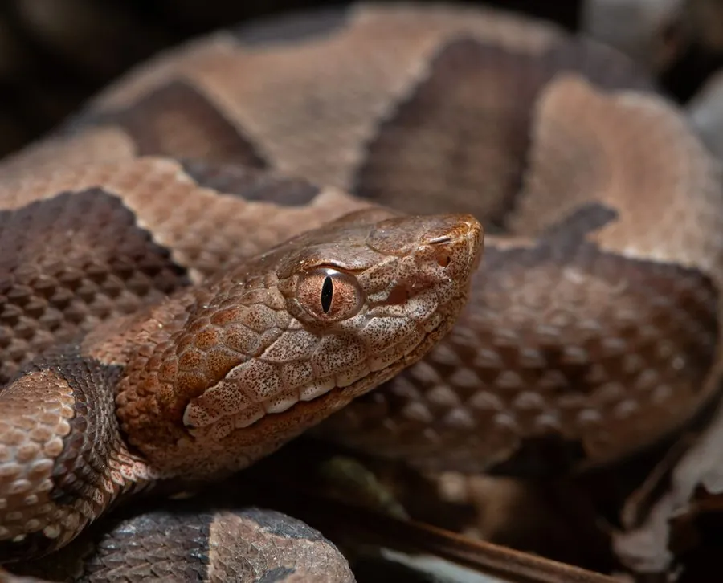

爬行动物 · 动物界
铜头蝮 Agkistrodon contortrix

北美东部的毒蛇，头部呈铜红色、身体有沙漏状斑纹，善伪装，毒性一般但被咬仍须及时就医，不可大意。
- 分类
- 门脊索动物门纲爬行纲目有鳞目科蝰科属蝮属
- 栖息环境
- 美国东部的森林、岩石山坡、灌丛与水边
- 地理分布
- 美国东部和中部地区
- 保护级别
- IUCN 无危（LC）；非中国原产，在中国无保护级别
物种志
铜头蝮体长 60–90 厘米，身体较粗壮，头部略呈三角形，头胸部呈铜红色或红褐色，“铜头”之名由此而来；体色以黄褐或粉褐色为底，背部有一系列沙漏形或蝴蝶形的深色斑块，斑块边缘镶浅色，腹部灰白并带斑点。它的花纹在落叶层中具有很好的隐蔽效果。
它分布于美国东部和中部，栖息于森林、岩石山坡、灌丛和水边，多在晨昏和夜间活动，捕食鼠类、蛙类、昆虫和小型鸟类。它是卵胎生蛇类，每胎产 2–18 条幼蛇。铜头蝮毒性一般，被咬后局部会肿胀疼痛，少见严重全身症状，但仍须及时就医；它性情温和、善于伪装，很多人是在无意中靠近才被咬伤，野外行走时要注意脚下落叶和石缝。
形态与习性
- 食性鼠类、蛙类、昆虫和小型鸟类
- 体长60–90 cm
- 寿命约 15 年
- 繁殖卵胎生，每胎 2–18 条
- 活动节律晨昏和夜间活动
- 毒性毒性一般，被咬仍须及时就医
趣味知识
- 铜头蝮头胸部呈铜红色，是它名字的由来。
- 它的沙漏形斑纹与落叶层融为一体，静止时极难发现。
- 铜头蝮性情温和，多数咬伤发生在人无意中靠近时。